Yagmour
Rebrand campaign
Yagmour is a well-known clothing brand established in Argentina since 1971. After 3 generations following the same visual identity, they have trusted us for a restyling campaign to amplify the brand's target: younger and proactive woman who want to stay classic with pops of new urban trends.
- Creative fieldsArt Direction, Branding, Fashion
Rebrand campaign
Yagmour is an established fashion retailer for professional women, I led the rebrand launch aimed at repositioning the label as the ultimate destination for style-conscious working women. By blending contemporary trends with timeless wardrobe essentials, I crafted a renovated visual identity that resonated deeply with their new target audience.
Measureable results
The relaunch included a complete overhaul of visual guidelines, tone of voice, styling, and in-store experiences, resulting in a 28% increase in sales within the first year and improved customer retention. Today, Yagmour continues to proudly showcase the revamped brand guidelines, proving the positive impact of this transformation.
Before & after
The original logo, characterized by its bold and extended typeface, was transformed into a refined, elevated design featuring a sleek, high-X-height typeface that embodied a modest sophistication. While the logo redesign itself was a subtle evolution, the true challenge lay in seamlessly integrating this new identity across all brand collateral and refreshing the art direction for the campaign and lookbook shoots. This meticulous overhaul ensured consistency and elevated the brand's overall aesthetic, solidifying its appeal to a more discerning, style-conscious audience.
Monograms
To enhance scalability and versatility, I proposed a series of monogram options as a minimalist brand expression, designed to adapt seamlessly across diverse applications and mediums. While this approach offered significant flexibility and alignment with modern branding trends, the final decision ultimately favored an alternative direction, ensuring the chosen identity best aligned with the brand’s broader strategic goals.
Brand colors
The decision to retain the original hero color preserved the brand's established identity and recognition, while introducing a brighter red and complementary pastel tones added depth and versatility to the palette. This update created a more dynamic visual language that could adapt consistently across various platforms and campaigns while appealing to a broader, more diverse audience.
Restyling
The art direction overhaul was a key driver in Yagmour’s rebranding strategy. For years, the brand’s ambassador closely aligned with a specific target demographic, limiting its reach. To diversify and elevate its positioning, we introduced international talent, infusing the brand with a refined sophistication that resonated with a broader audience while reinforcing its aesthetic and aspirational appeal.
Campaign SS16
The core concept centers around “effortless sophistication”. We highlight Yagmour’s evolution by fusing understated elegance with modern versatility. It moves away from a purely mass-market identity and introduces a more aspirational yet approachable aesthetic. The art direction focuses on natural movement, soft contrasts, and urban cues, featuring unpretentious confidence.
The results
- Strengthened brand perception as sophisticated yet accessible.
- Increased social engagement through influencer collabs and UGC.
- Higher customer retention via experiential and personalized marketing.
- Elevated retail experience, reinforcing brand consistency.
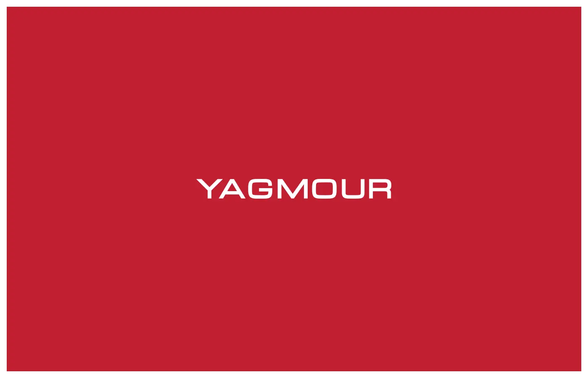
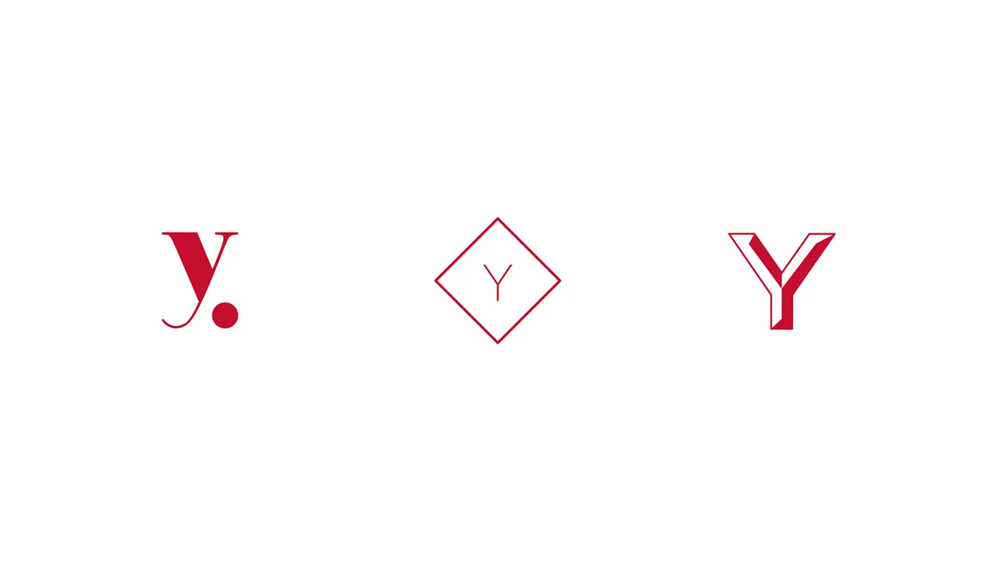
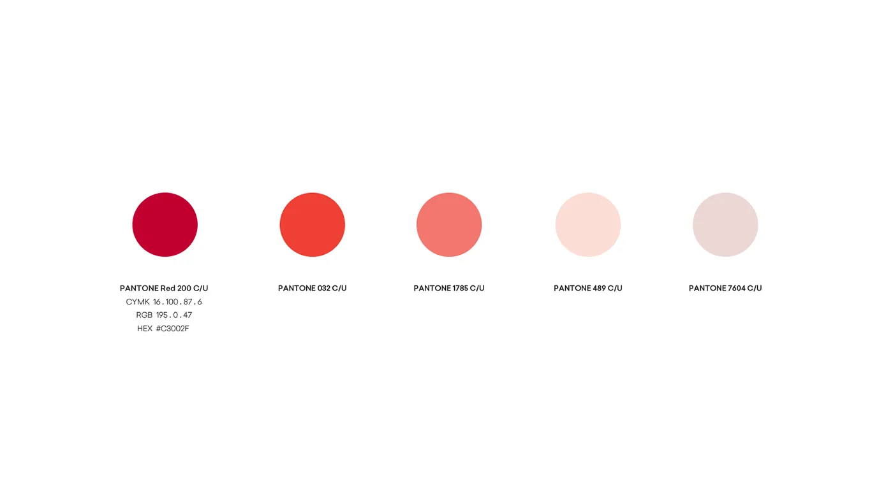
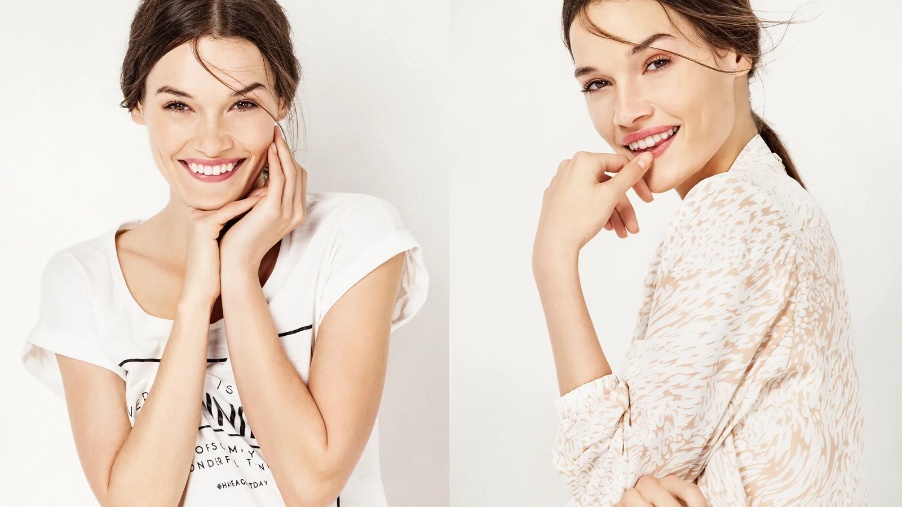
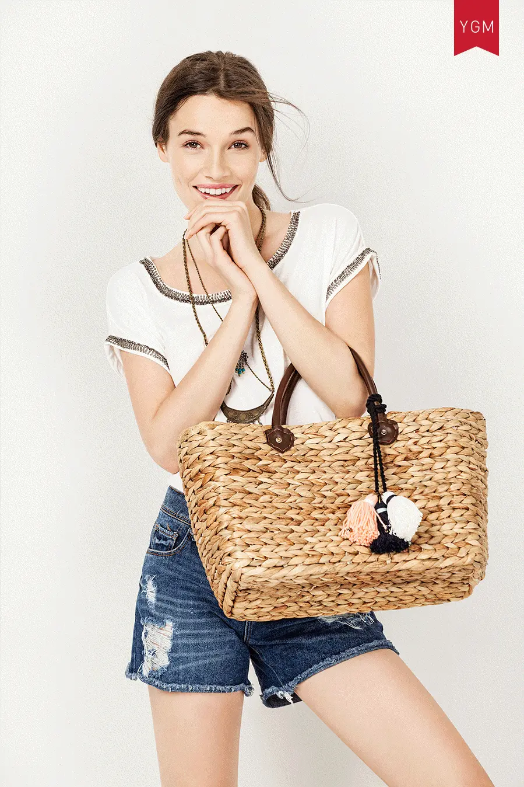
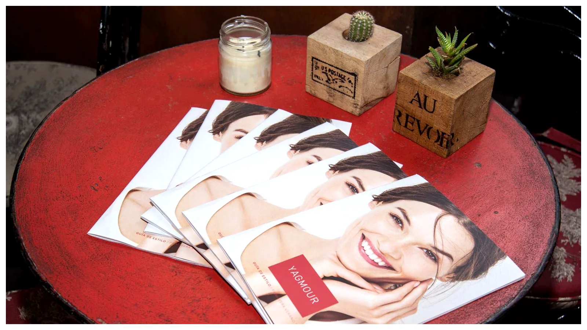
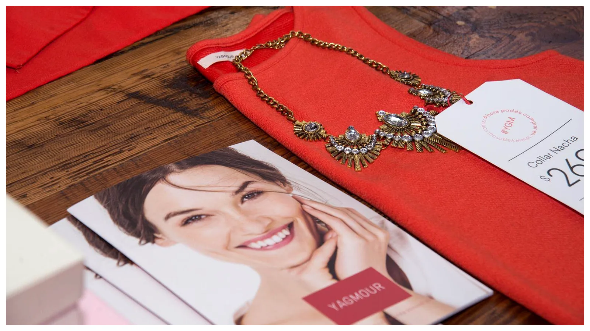
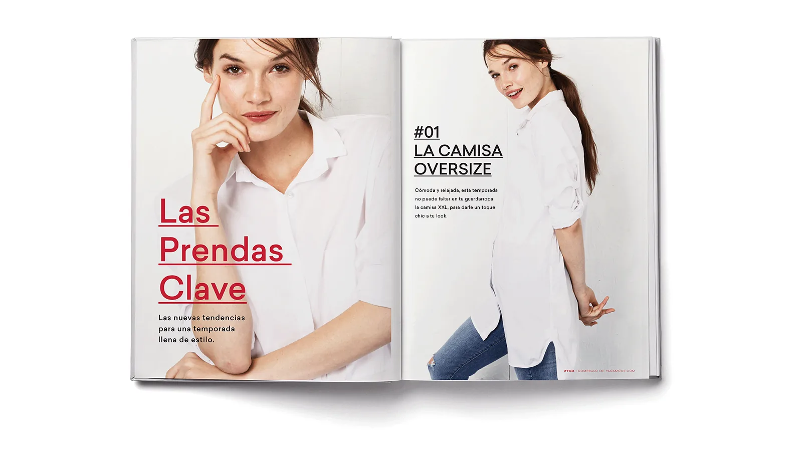
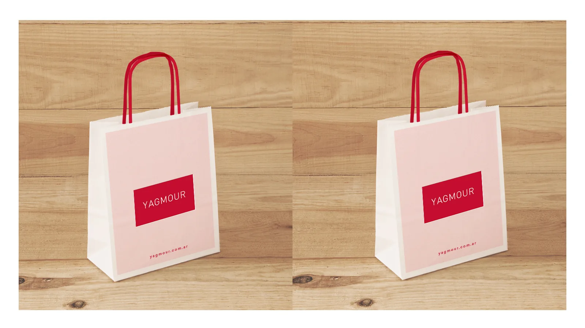
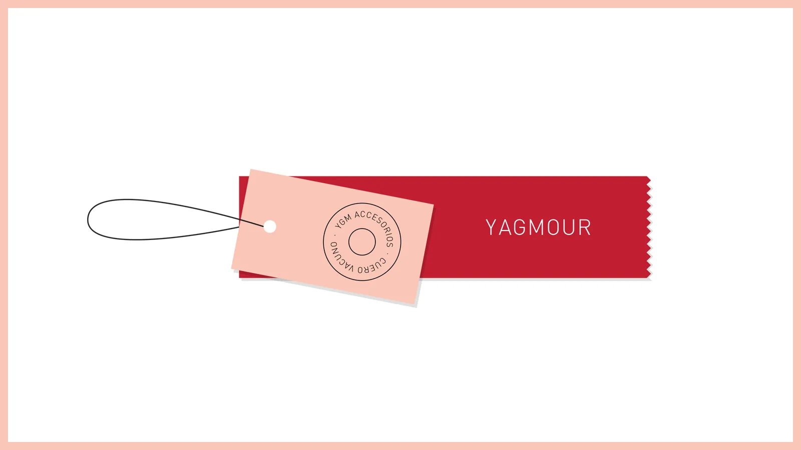
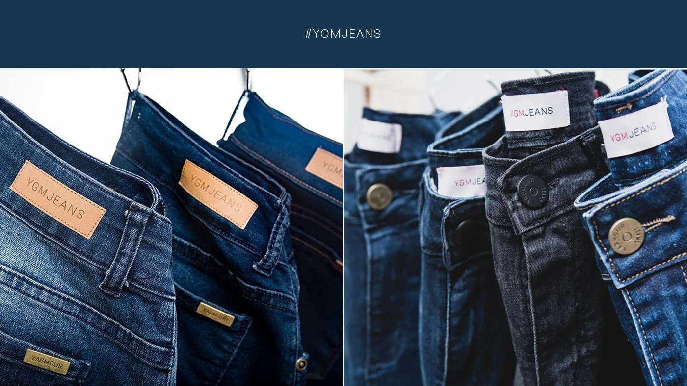
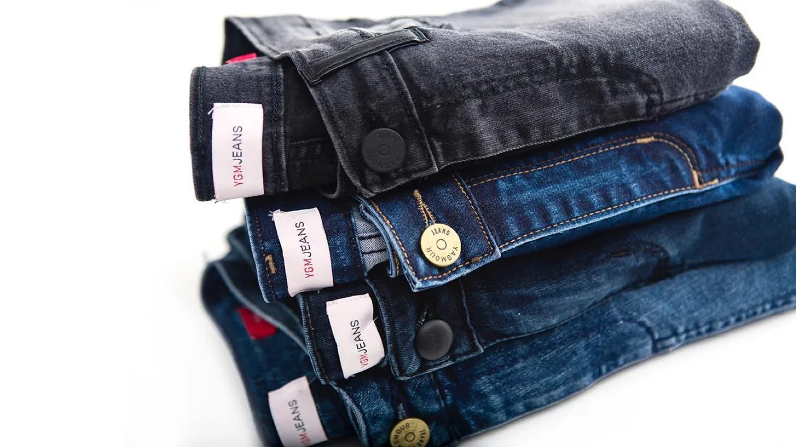
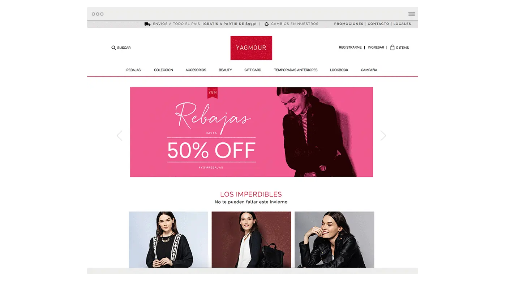
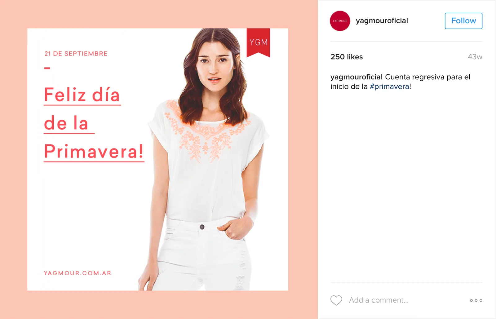
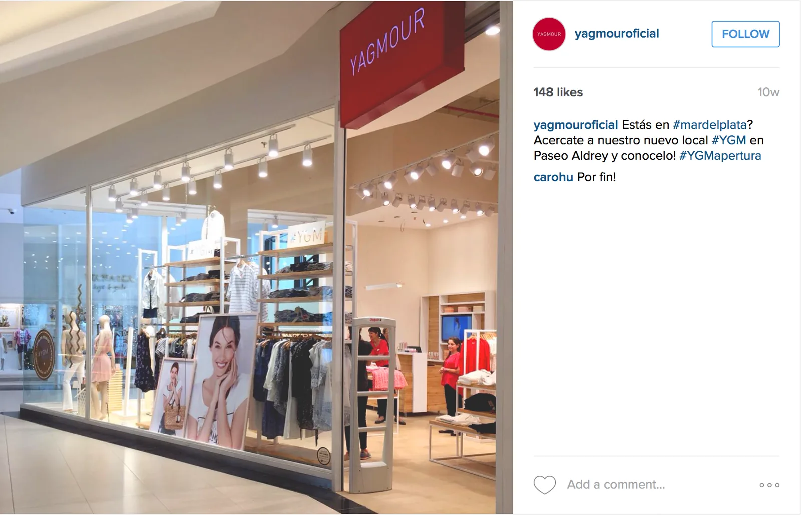
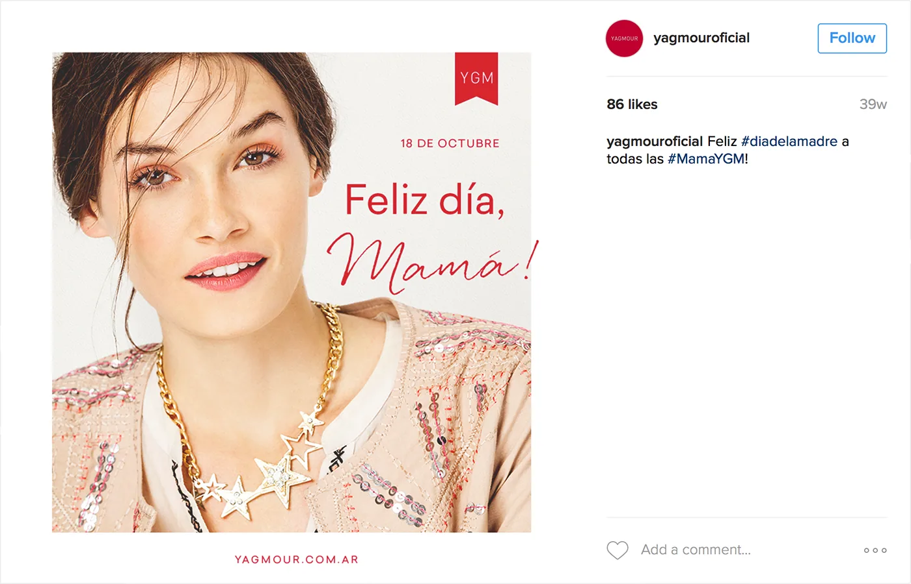
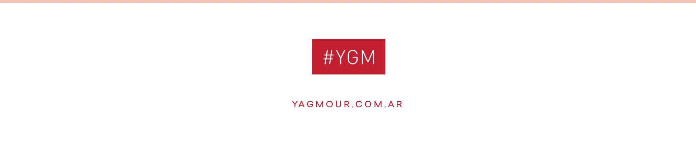
Credits
- Her
- Jessica Sikozek
- Photographer
- Santiago Albanell
- Styling
- Josefina Bugallo
- Make up
- Estudio Novillo
- Hair
- Estudio H
- Producer
- Fernando Gimenez
- Creative Direction
- Gabriel Pardo
- Rebranding, Art Direction & Design
- Nowi Plus
- Agency
- Pardo Estudio
- Location
- Buenos Aires, Argentina
- @yagmouroficial
- Pardo on Instagram
- @pardoestudio